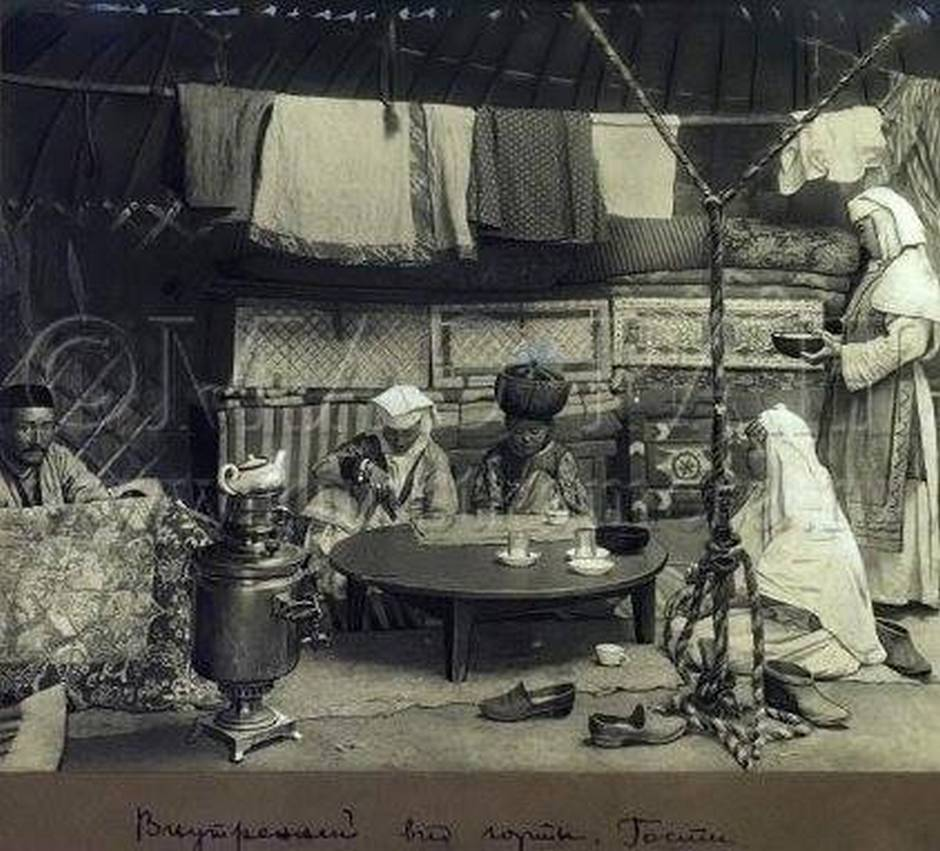

<div class="text">
    
  <p>A sandyq is a wooden object for storing clothes and other things. A chest is one of the oldest pieces of furniture used by people since ancient times. It was very convenient for nomadic peoples. An internal lock, sometimes a padlock, is often installed on the mouth of the chest. </p>
</div>
